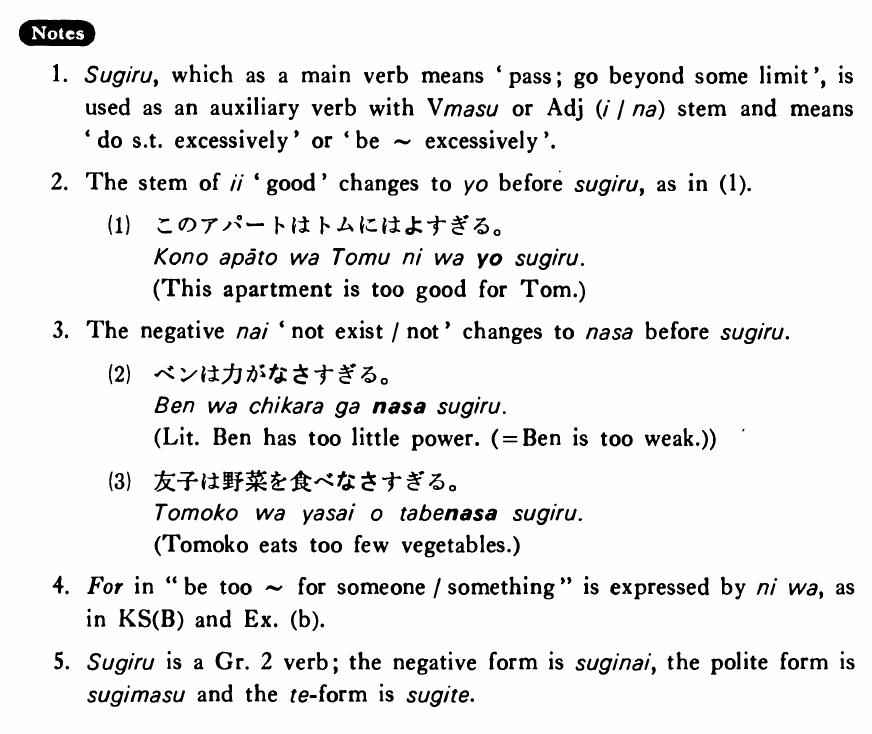

←
DoJG
→
過ぎる・すぎる
(B. 423)
Example sentences
(ksa).
ウィルソンは肉を食べ
過ぎる・過ぎます
。
Mr. Wilson eats too much meat.
(ksb).
このアパートは私達には高
過ぎる・過ぎます
。
This apartment is too expensive for us.
(a).
私は今朝寝
過ぎて
学校に遅れた。
I overslept this morning and was late for school.
(b).
この机は私の部屋には大き
過ぎる
。
This desk is too big for my room.
(c).
田中先生の授業は大変
過ぎる
ので辞めました。
I dropped Professor Tanaka's class because it was too demanding.
(d).
森さんは太り
過ぎている
。
Mr. Mori is too fat.
Formation
(i)
Vます
過ぎる
話し
過ぎる
Talk too much
食べ
過ぎる
Eat too much
(ii)
Adjective {い/な} stem
過ぎる
高
過ぎる
Too expensive
静か
過ぎる
Too quiet
